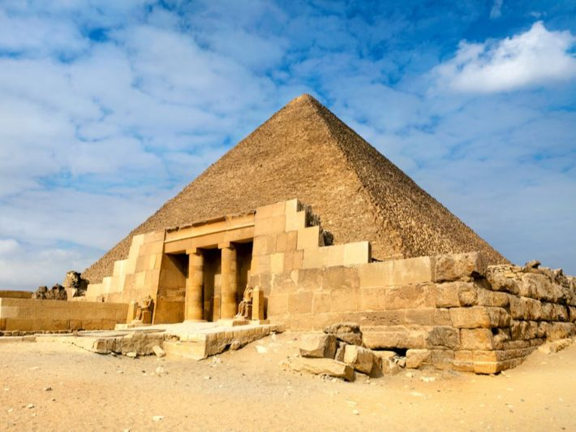
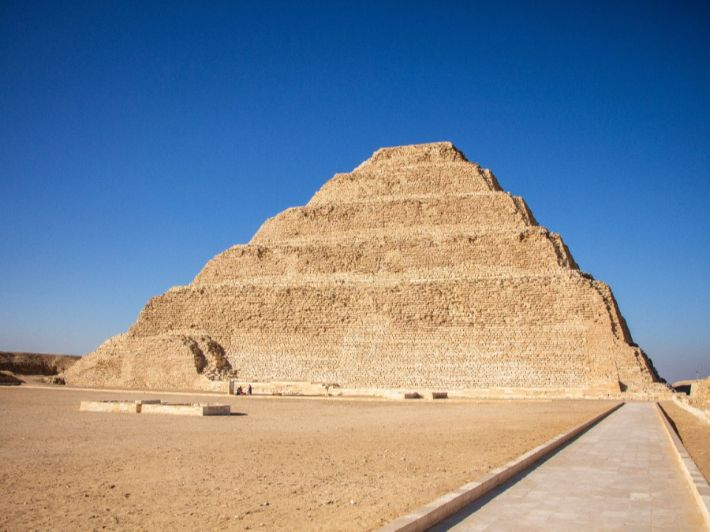

المقابر المصرية القديمة تمثل رحلة الإنسان في الحياة وبعد الموت، من أقدم المصاطب البسيطة إلى أعظم الأهرامات والمقابر الملكية مثل مقبرة توت عنخ آمون. كانت المقابر جزءًا أساسيًا من العقيدة المصرية التي تؤمن بالبعث والحياة الأبدية.
لقد بدأ المصريون القدماء بناء المقابر منذ عصور ما قبل الأسرات، بهدف تأمين حياة أبدية للمتوفى. كانت المقابر تُعتبر من أهم المنشآت بعد المعابد، لأنها تخدم الغرض الديني والروحي والاجتماعي. من خلال المقابر، يمكننا فهم الحياة اليومية، العقائد الدينية، والفن المصري القديم. كانت المقابر أيضًا رمزًا للسلطة والثروة، فكلما زاد نفوذ الشخص، زادت عظمة قبره.
بدأت المقابر المصرية بالمصاطب البسيطة، وهي عبارة عن منصات مرتفعة مصنوعة من الطوب اللبن فوق القبر. في عصر الأسرات المبكرة، ظهرت المقابر الصخرية والمقابر الملكية البسيطة. مع تطور الحضارة، أصبحت الأهرامات رمزًا للقوة والخلود، مثل هرم زوسر المدرج الذي يعد أول هرم حقيقي، وهرم خوفو الأكبر الذي يعتبر أعظم إنجاز هندسي في العالم القديم. في العصور المتأخرة، برزت مقابر وادي الملوك ووادي الملكات، حيث دفن الملوك والنبلاء في مقابر محفورة في الجبال مع دهاليز وغرف متعددة مزينة بالرسوم الجدارية.

تتنوع المقابر في مصر القديمة حسب الغرض والمكانة الاجتماعية:

استخدم المصريون القدماء أدوات بسيطة مثل الأزاميل والمطارق، واستغلوا الصخور الطرية مثل الحجر الجيري والجرانيت. كانت عملية البناء تتطلب تخطيطًا دقيقًا لتجنب الانهيار. في حالة الأهرامات، تم نقل الحجارة الضخمة باستخدام الزلاقات على الرمال المبتلة لتقليل الاحتكاك. أما في وادي الملوك، فقد تم حفر دهاليز وغرف طويلة بدقة هندسية لضمان الأمن والحماية من السرقة.

1. مقبرة توت عنخ آمون: اكتشفها هوارد كارتر عام 1922، تحتوي على كنوز لا تُقدر بثمن، تمثل الفن والحياة اليومية للملك. تقع في وادي الملوك، الأسرة 18، وهي واحدة من أفضل المقابر المحفوظة.

2. هرم خوفو: أكبر هرم في الجيزة، يعتبر قمة الإنجاز الهندسي في الدولة القديمة، بني لتخليد الملك خوفو.

3. هرم زوسر: أول هرم مدرج، يمثل الانتقال من المصطبة إلى الهرم الحقيقي.

4. مقابر وادي الملوك: تشمل مقابر الملك رمسيس الثاني، الملكة حتشبسوت، وتوت عنخ آمون، تحتوي على نقوش ورسومات دقيقة تحكي الطقوس الدينية.
المقابر المصرية القديمة تمثل تاريخًا طويلًا من الابتكار الهندسي والديني، من المصاطب البسيطة إلى الأهرامات العظيمة ومقابر وادي الملوك المحفورة بدقة. كل مقبرة هي رسالة للخلود، وتعلمنا كيف كان المصريون القدماء يدمجون الدين، الفن، والهندسة في بناء أماكن خالدة للذاكرة الأبدية.